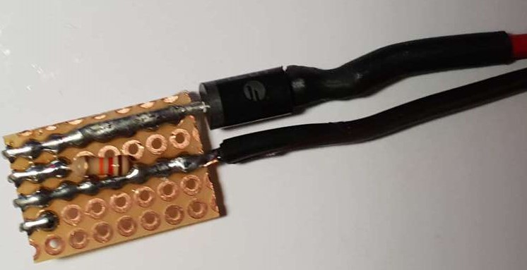
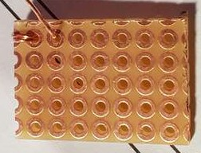

Modify Android Phone To Run Without a Battery
Modify Android Phone To Run Without a Battery
I had few use cases where I needed a constantly on Android phone. The issue with keeping any device constantly charging is that their battery will suffer. In case of lithium-ion batteries, they have a proclivity to inflate and even catch fire or even explode. So keeping your mobile phone charging all the time is a NO.
Luckily, there is a way to solve that issue by ripping out the battery and adding an external power source instead of the battery, but even this may not be so easy since more and more entry level phones have a built-in a hard to replace battery, so you really have to find a right phone. I tried this mod on several phones LG (with removable battery), Samsung (With removable battery), Nexus 6 (with embedded battery).
The results were:
- LG (with removable battery): boots up and works for few minutes after that magic battery DRM kicks in and shuts down the phone. So don't bother with LG phones
- Nexus 6 (with embedded battery): Fried that sucker. The power pins were tiny, so don't bother also.
- Samsung (with removable battery): Worked like a charm I actually managed to hack 2 different models of Samsung phones, both with a removable battery:
So this post will cover my journey of hacking a Samsung XCover 4 to run w/out a battery.
The Guide
The schematics are relatively simple. I used a 5V, 2A AC/DC power adapter. You may say, ask why I did not reuse the original charger?
Well, the original charger had 2 issues:
- The output voltage was rated
5.2 V - Also, the output current was only
1 A.
If the phone gets some heavy load e.g. a video game, it may start shutting down or
the battery level may drop below a 100%, and we don't want that let's just tell
the phone the battery is at 100% all the time.
The battery % may fall because the charger's voltage begins to fall sharply if high current is required by the device that's why I chose to buy a 5 V, 2 A adapter and not use the original
charger.
Now you may ask but won't 5V directly to the battery pins damage the phone?
Since li-ion batteries are usually rated @3.7 V, yes 5V directly may damage the
phone's electronics inside, so I dropped the voltage using a single component
since I wanted for the circuit to be as simple as possible. I just used a high
current FUF5408 diode. You should keep in mind that diodes don't drop voltage
at a fixed point, they also have some Volt-ampere characteristics (i.e. voltage drop across the diode based on passing current).
Here is the original schematics:
R_1 = 12k Ω, 0.25 W Resistor
D_1 = FUF5408, High Power Diode
[NFC] -- Not used
[-] -- Negative (-) power rail duh
[S] -- Thermal resistor pin, originaly thermal resistor is built into the battery.
[+] -- (+)
here is how the module looks like when soldered

As you can see, module uses 4 pins, well actually only 3 of them since the left most pin is used for NFC data. Yes, Samsung batteries have NFC antennas glued on the batteries and not build it into the phone, since I did not really need the NFC I did not bother connecting it. Also, as mentioned before thermal resistors are also a part of the battery, that's why we used 12k Ω resistor, because we need to fool the phone into believing that battery temperature is OK.

For the soldered module, I used a simple breakout board.
Fun fact Samsung battery pins are spaced in the good old INLINE manner meaning
that the distance between the centers of adjacent pins is equal to 1"/10 = 2.54 mm.

If you are attentive enough, you probably noticed that the top part of breakout
holes are cut in half having a U shape and not plain O hole shape. This was
intentional, because I wrapped the contact pins w/ one striped wire from the
CAT-5 cable.
And here is how the finished hack looks like. I simply used hot-glue to keep the module in place also make sure you hot glue the wires as well so that under tension, they don't transfer any "wobbliness" to the module itself.
Final Thoughts
- This "no battery" method worked quite well for me and proved not to cause any issues
- The work and components involved are readily available and easy to put together
- NFC can be added if needed, you simply would need to peel off the NFC tag from the original battery.
- Phone, in this configuration, can be used as a cheap IP camera using IP Webcam app
- If you are paranoid about the voltage levels of your "no battery" mod you can use the BatteryBot to check some battery stats.
- I would only bother w/ Samsung phones & only phone w/ removable batteries because from my experience it is guaranteed to work and easiest to mod way.